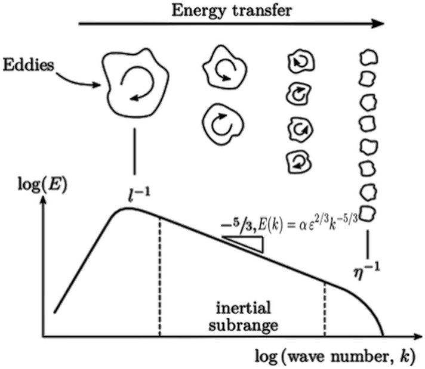
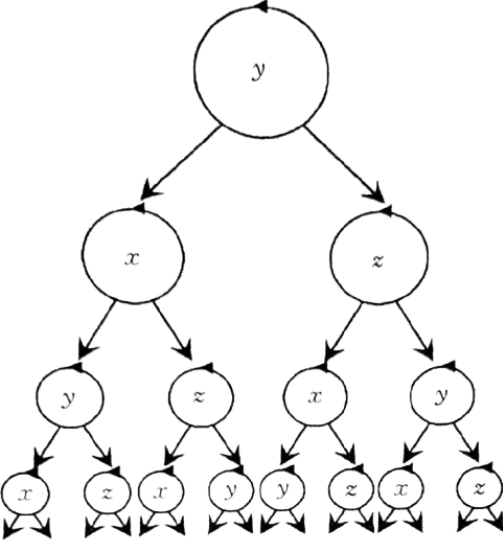

The process of large eddies becoming smaller involves a transfer of kinetic energy from larger to smaller eddies, known as a the energy cascade

In classical theory, turbulent flow is viewed as a flow made up of eddies of different scales. For a particular flow, the largest-scale eddies represent the shear and rotation of the average flow. For high Reynolds number flows, such large eddies tend to be unstable and break into a number of small ones with strong unsteadiness, which converts the kinetic energy of the average flow into turbulent kinetic energy. These small eddies might still be unstable and further break into smaller ones.

In this region, turbulent kinetic energy is not dissipated but continuously transported from large-scale to small-scale eddies, until the scales are small enough (corresponding to very small Reynolds numbers) for the dominant viscous forces to dissipate the kinetic energy into internal energy.
The vortex stretching and squeezing mechanism represents the process by which large-scale eddies extract energy from the mean shear flow.
Since stretching leads to a reduction in the vortex scale (i.e., the vortex tube becomes thinner), the stretching process shows that energy is transferred from large-scale motion to small-scale motion.
The energy transmitted to the smallest-scale turbulent fluctuation is converted into heat.
After several steps of the energy cascade, the newly generated small-scale vortices become progressively smaller, and their directional preference becomes statistically less distinct, approaching isotropy. Therefore, in general, small-scale turbulent fluctuations tend to be isotropic (or locally isotropic).
1H. W. Chris Greenshields, “Notes on Computational Fluid Dynamics: General Principles,” 4 2022. [Online].
https://doc.cfd.direct/notes/cfd-general-principles/energy-cascade
2Hongwei Wang (2023). A Guide to Fluid Mechanics. National Defense Industry Press.